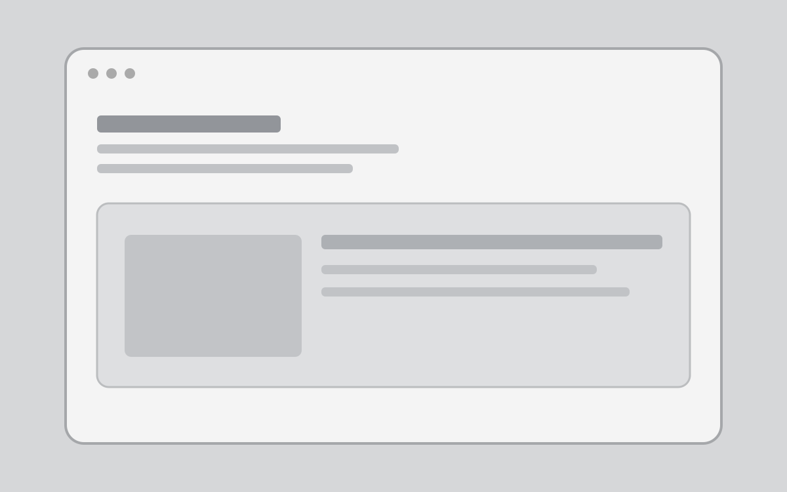
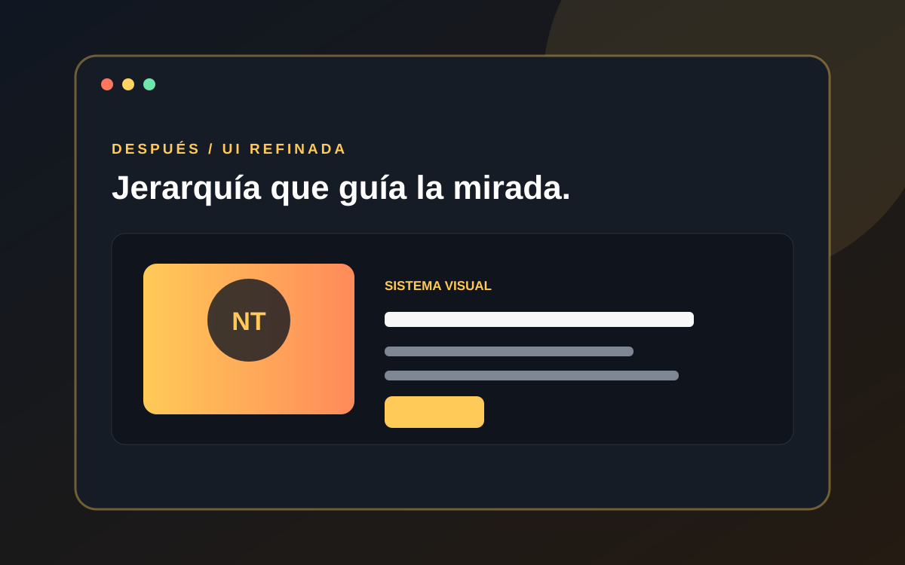

Arrastra / Toca / Usa flechas
Dos estados. Una diferencia clara.
Compara dos ilustraciones SVG propias. El control acepta arrastre, touch, flechas, Home, End y posiciones rápidas.Comparación antes y después


Comparación al 50%.